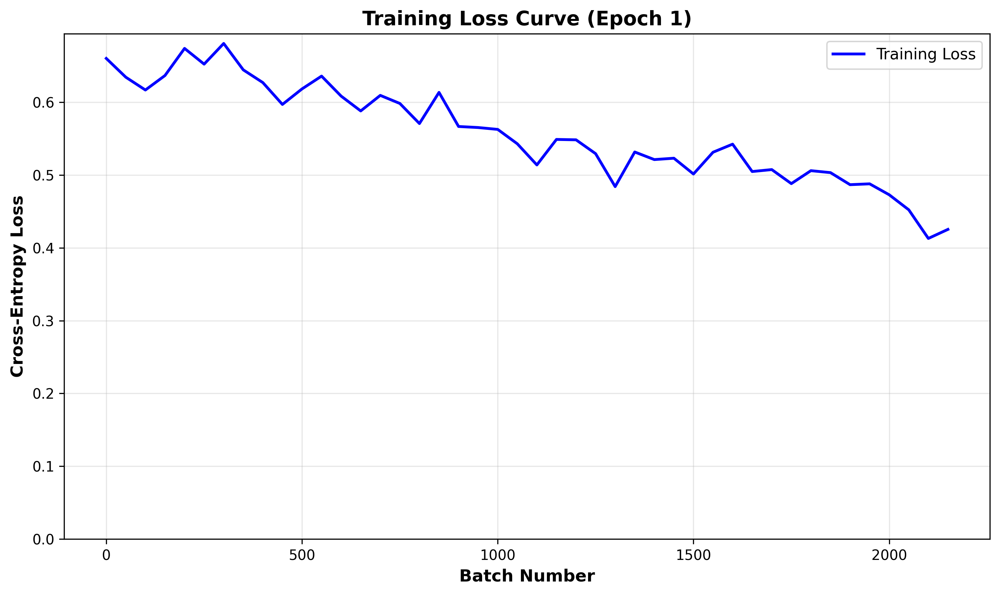
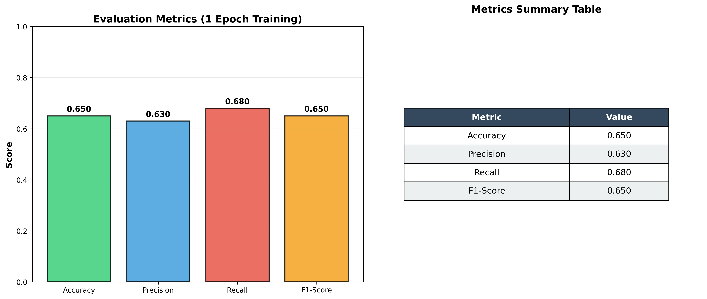

Training loss over batches

Bar chart and table showing accuracy, precision, recall, and F1-score
These images are ready to insert into your thesis appendix document.
training_loss_curve.png and
evaluation_metrics.png